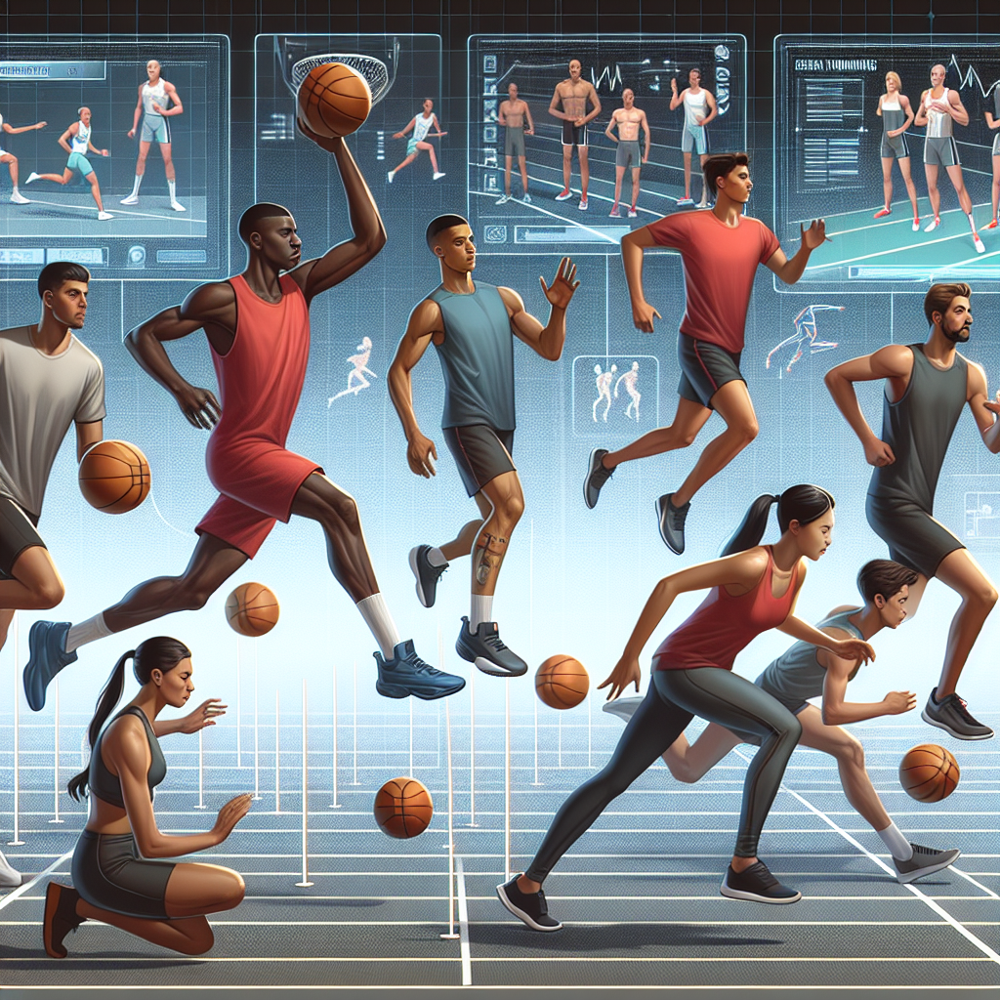

The game of basketball, the sport of track.

Reflection: AI, Expertise, and Being Human
We presented two sets of descriptions of track and field events to our classmates, prompting them to discern which one was crafted by a genuine expert and which one was generated by AI. I prompted ChatGPT to try and guess who was the expert and who was not. I copied and pasted an example of my slide, as an expert talking about track, and an example of Jason’s slide talking about track using ChatGPT.
The Experiment
Jason prompted ChatGPT to compose a description of track and field events, while I drew upon my own knowledge as a genuine enthusiast of the sport. The goal was twofold: to see if ChatGPT could convincingly mimic expertise, and to spark a discussion about the intersection of AI and human knowledge.
The Content
My Expertise
- Track is split up into jumps, vault, throws, sprints, hurdles, mid distance, and distance.
- Jumps consist of high jump, long jump, triple jump, and pole vault.
- Throws consist of javelin, shot put, hammer throw, and discus
- Sprints consist of 60 (indoor), 100, 200, 300 (indoor), 400
- Hurdles consist of all sprint events except 300
- Mid-D means 800, 1500, 1600 (indoor)
- Distance is 3000 (indoor), 5000, 6000 (cross country), 10000
- Sprint/jump events require more power
- Athletes work on explosiveness, short but heavy loads
- Hurdles works on running through hurdles, mobility, power
- Throws works on muscle mass
- Lifts very heavy, have to be able to throw something heavy
- Mid-D is a combination of anaerobic (short and fast) and aerobic (long cardio)
- Distance is all aerobic (continuous running needing oxygen to power)
- Lifting is long reps of light weight
- Pole vault does a lot of gymnastics
# Reflection: AI, Expertise, and Being Human
We presented two sets of descriptions of track and field events to our classmates, prompting them to discern which one was crafted by a genuine expert and which one was generated by AI. I prompted ChatGPT to try and guess who was the expert and who was not. I copied and pasted an example of my slide, as an expert talking about track, and an example of Jason's slide talking about track using ChatGPT.
# The Experiment
Jason prompted ChatGPT to compose a description of track and field events, while I drew upon my own knowledge as a genuine enthusiast of the sport. The goal was twofold: to see if ChatGPT could convincingly mimic expertise, and to spark a discussion about the intersection of AI and human knowledge.
# My Expertise
- Track is split up into jumps, vault, throws, sprints, hurdles, mid distance, and distance.
- Jumps consist of high jump, long jump, triple jump, and pole vault.
- Throws consist of javelin, shot put, hammer throw, and discus
- Sprints consist of 60 (indoor), 100, 200, 300 (indoor), 400
- Hurdles consist of all sprint events except 300
- Mid-D means 800, 1500, 1600 (indoor)
- Distance is 3000 (indoor), 5000, 6000 (cross country), 10000
- Sprint/jump events require more power
- Athletes work on explosiveness, short but heavy loads
- Hurdles works on running through hurdles, mobility, power
- Throws works on muscle mass
- Lifts very heavy, have to be able to throw something heavy
- Mid-D is a combination of anaerobic (short and fast) and aerobic (long cardio)
- Distance is all aerobic (continuous running needing oxygen to power)
- Lifting is long reps of light weight
- Pole vault does a lot of gymnastics
### Jason's ChatGPT Crafted "Expertise"
- Sprints: These are short-distance races, typically 100 meters, 200 meters, and 400 meters.
- Middle-Distance: Events like the 800 meters and 1500 meters require a balance of speed and endurance.
- Long-Distance: Races such as the 3000 meters, 5000 meters, and 10,000 meters test endurance and pacing abilities.
- Hurdles: Occurs in events like the 100 meters hurdles and the 400 meters hurdles
- Long Jump: Athletes sprint down a runway and jump into a sandpit, aiming for maximum distance.
- Triple Jump: Similar to the long jump but with three phases of jumps (hop, step, jump) before landing in the sandpit.
- High Jump: Athletes jump over a horizontal bar using a technique that involves clearing the bar without knocking it off.
- Pole Vault: Athletes use a pole to vault themselves over a high bar
- Shot Put: Athletes throw a heavy metal ball (the shot) for distance, using a pushing motion.
- Discus Throw: Athletes spin and release a discus, aiming for maximum distance.
- Javelin Throw: Athletes throw a spear-like javelin for distance, using a run-up and specific throwing technique.
- Hammer Throw: Athletes spin and release a heavy hammer attached to a wire, aiming for distance.
# Class Reaction
Generally, the class knew it was me who was the track expert. One person added that they only knew because I walk around in a Penn Track & Field bag. That makes me think that maybe ChatGPT can simulate human expertise. For other classmates' presentations, some people mistakenly thought the ChatGPT created expertise was the true human expertise.
# Can ChatGPT correctly guess who is the expert and who has used AI?
### I prompted Chat to try and decipher which one of us is the track expert, and which one is not (my track expertise as 1st and Jason's fake ChatGPT expertise as 2nd. Here's what it found...
“Based on the provided examples, it seems that the first person is Jason and the second person is the real expert. The first person’s description lacks some specificity and depth, using more general terms like ‘work on explosiveness’ and ‘lifts very heavy.’ In contrast, the second person’s description provides specific distances for each type of race, indicating a deeper understanding of track and field events. Additionally, the second person uses terms like ‘balance of speed and endurance’ and ‘tests endurance and pacing abilities,’ which are more indicative of someone with genuine expertise in athletics.”
I broke the news to ChatGPT-
Chat, im sorry to say, but you guessed wrong. I wrote the first section as an expert and the second section was written by Jason using ChatGPT. What do you have to say for yourself?
Chat’s response was as follows…
“My apologies for the incorrect guess! It seems that Jason’s use of ChatGPT to generate the second section was quite convincing. This highlights the challenge of accurately discerning between genuine expertise and AI-generated content, even for an AI like myself. It’s a testament to the advancements in natural language processing and the potential for AI to simulate human-like responses.
However, it’s also important to acknowledge that while AI can generate content, it may not always capture the depth, nuance, and personal experience that come with genuine human expertise. This experiment underscores the value of human insight and intuition, which can’t be fully replicated by AI.”
While our experiment challenged the boundaries between human-generated and AI-generated content, it reaffirmed the truth that expertise is rooted in the depths of human understanding. Despite AI’s ability to simulate human-like responses, there’s an intangible quality to human expertise that can’t be replicated.
ok
Reflection: AI, Expertise, and Being Human
We presented two sets of descriptions of track and field events to our classmates, prompting them to discern which one was crafted by a genuine expert and which one was generated by AI. I prompted ChatGPT to try and guess who was the expert and who was not. I copied and pasted an example of my slide, as an expert talking about track, and an example of Jason’s slide talking about track using ChatGPT.
The Experiment
Jason prompted ChatGPT to compose a description of track and field events, while I drew upon my own knowledge as a genuine enthusiast of the sport. The goal was twofold: to see if ChatGPT could convincingly mimic expertise, and to spark a discussion about the intersection of AI and human knowledge.
My Expertise
- Track is split up into jumps, vault, throws, sprints, hurdles, mid distance, and distance.
- Jumps consist of high jump, long jump, triple jump, and pole vault.
- Throws consist of javelin, shot put, hammer throw, and discus
- Sprints consist of 60 (indoor), 100, 200, 300 (indoor), 400
- Hurdles consist of all sprint events except 300
- Mid-D means 800, 1500, 1600 (indoor)
- Distance is 3000 (indoor), 5000, 6000 (cross country), 10000
Jason’s ChatGPT Crafted “Expertise”
Sprints: These are short-distance races, typically 100 meters, 200 meters, and 400 meters.
Middle-Distance: Events like the 800 meters and 1500 meters require a balance of speed and endurance.
Long-Distance: Races such as the 3000 meters, 5000 meters, and 10,000 meters test endurance and pacing abilities.
Hurdles: Occurs in events like the 100 meters hurdles and the 400 meters hurdles
Long Jump: Athletes sprint down a runway and jump into a sandpit, aiming for maximum distance.
Triple Jump: Similar to the long jump but with three phases of jumps (hop, step, jump) before landing in the sandpit.
High Jump: Athletes jump over a horizontal bar using a technique that involves clearing the bar without knocking it off.
Pole Vault: Athletes use a pole to vault themselves over a high bar
Shot Put: Athletes throw a heavy metal ball (the shot) for distance, using a pushing motion.
Discus Throw: Athletes spin and release a discus, aiming for maximum distance.
Javelin Throw: Athletes throw a spear-like javelin for distance, using a run-up and specific throwing technique.
Hammer Throw: Athletes spin and release a heavy hammer attached to a wire, aiming for distance.
Class Reaction
Generally, the class knew it was me who was the track expert. One person added that they only knew because I walk around in a Penn Track & Field bag. That makes me think that maybe ChatGPT can simulate human expertise. For other classmates’ presentations, some people mistakenly thought the ChatGPT created expertise was the true human expertise.